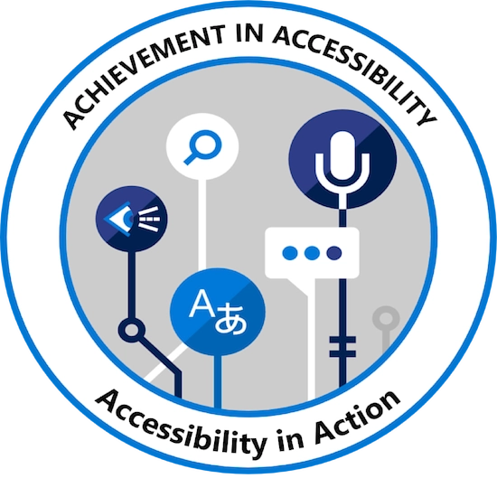

| Certification Title | Date Issued | Issued By | Expiration Date | Verification Information | Badge or Icon |
|---|---|---|---|---|---|
| Accessibility in Action Badge | April 27th, 2020 | Microsoft Accesibility | Not Applicable | Verify on Acclaim |  |
| Trusted Tester | July 8th, 2020 | Department of Homeland Security Office of Accessible Systems & Technology | Not Applicable | Trusted Tester Certification Number: TT-2007-01048 | None |